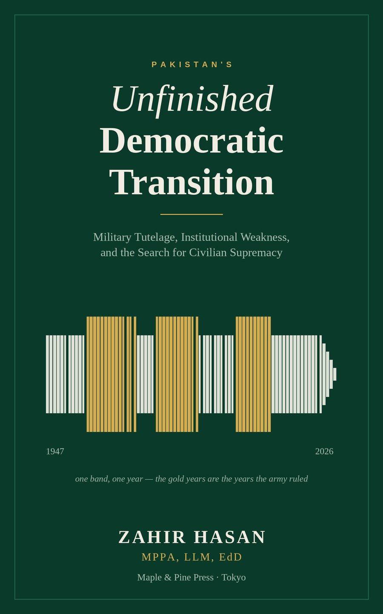

Pakistan's Unfinished Democratic Transition
Military Tutelage, Institutional Weakness, and the Search for Civilian Supremacy

No prime minister of Pakistan has ever finished a term.
Generals have governed Pakistan outright for roughly a third of its life and shaped it for most of the rest. The familiar explanations — ambitious commanders, corrupt politicians, American interference — are each partly right and jointly inadequate.
In this study, Zahir Hasan argues that the binding constraint on Pakistan's democracy is not the strength of its army but the army's autonomy from constitutional control: an autonomy sustained by weak parties, obliging courts, an opaque military economy, and foreign partners who prefer one reliable interlocutor to a noisy parliament. He traces the pattern from the abrogation of the 1956 Constitution through the loss of East Pakistan, the Zia and Musharraf years, and the hybrid order that followed 2018 — and he states the strongest objections to his own case before answering them.
Is Pakistan a failed state? No — and the true answer is harder to live with. It is a state that is powerful and weak at once: able to confront a nuclear-armed rival and unable to tax its wealthiest sectors, formidable against a journalist and helpless against a flood.
Drawing on democratic transitions in Indonesia, Turkey, Chile, and South Korea, the book closes with a sequenced program for civilian supremacy in which every reform carries an instrument, an owner, and a public test.
Fully referenced in APA 7 style, with a 1947–2026 chronology, a guide to Pakistan's institutions and parties, and forty-nine case boxes.
Ebook and paperback · Maple & Pine Press
- Author
- Dr. Zahir Hasan
- Publisher
- Maple & Pine Press, Tokyo
- List
- Politics, Law & International Affairs